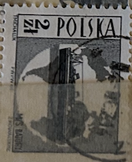
| SOURCE | TITLE| IMAGE MATCH | click to source page |
| Dreamstime.com | Memorial To Polish General Sikorski at Europa Point on the Rock of Gibraltar Editorial Image - Image of companions, rock: 118943845 | 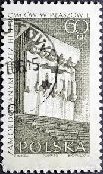 |
| eBay | Poland 1937 Marshal Edward RYDZ-SMIGLY 25 Gr (FBX) | eBay | 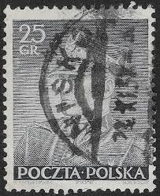 |
| eBay | POLAND BLACK PRINT 1958 RARE !! RAILROAD RAILWAY TRAIN SIGNAL /m1924 | eBay | 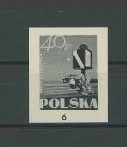 |
| iStock | Postage Stamp Germany 1973 Hoisted Cargo Accident Prevention Stock Photo - Download Image Now - iStock | 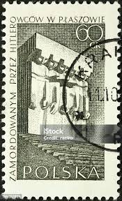 |
| Duke University | The Incredible Journey of Marian Opala | 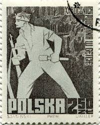 |
| Shutterstock | Poland Circa 1963 Stamp Printed Poland Stock Photo 114294373 | Shutterstock | 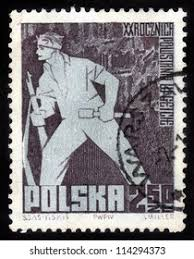 |
| Find Your Stamps Value | Battle of Grunwald by Jan Matejko 2.50z Dark gray stamp price, value | 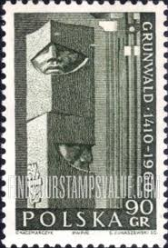 |
| PicClick | POLAND 1964 : World War II memorials Part 1 // 4 stamps (x2) $7.95 - PicClick | 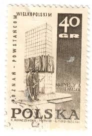 |
| Dreamstime.com | 107 550th Stock Photos - Free & Royalty-Free Stock Photos from Dreamstime | 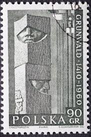 |
| Shutterstock | Old Stamp Holocaust: Over 136 Royalty-Free Licensable Stock Photos | Shutterstock | 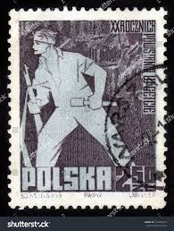 |
| The Philately | Aden 1946 Sg 29 King George VI and Houses of Parliament Sc 29 for sale at The Philately | 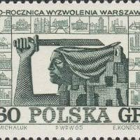 |
| PicClick | POLAND WW2 ARMY Solgiers in France stamp 1942 MLH GG $9.99 - PicClick | 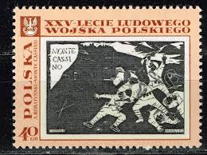 |
| Shutterstock | 2+ Thousand Polska Stamp Royalty-Free Images, Stock Photos & Pictures | Shutterstock | 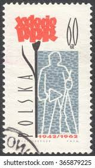 |
| iStock | 50+ Upraised Arms Stock Photos, Pictures & Royalty-Free Images - iStock | 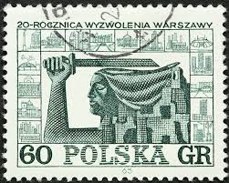 |
| Shutterstock | Germany Ddr Circa 1967 Postage Stamp Foto stock 1766971160 | Shutterstock | 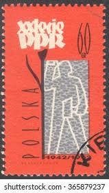 |
| lastdodo.com | Xawery Dunikowski [1875-1964] Stamp catalogue - LastDodo | 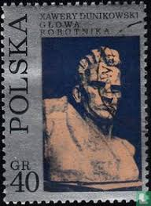 |
| Dreamstime.com | Dzerzhinski Stock Photos - Free & Royalty-Free Stock Photos from Dreamstime | 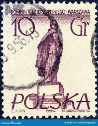 |
| Shutterstock | Sello filigrana: Más de 818 fotos de stock con licencia libres de regalías | Shutterstock | 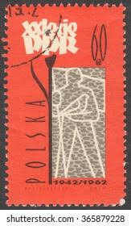 |
| Dreamstime.com | 1960 90 Stock Photos - Free & Royalty-Free Stock Photos from Dreamstime | 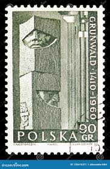 |
| allnumis.com | 40 Groszy 1968 - Polish Insurgents' Memorial, Poznan, 1968 - Poland - Stamp - 33594 | 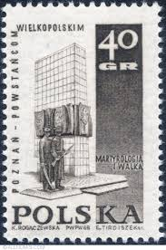 |
| iStock | Polish Soldiers Swords And Eagle Symbol Postage Stamp Stock Photo - Download Image Now - iStock | 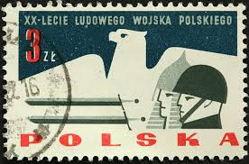 |
| allnumis.com | 60 groszy1965 - Monument in Kraków-Płaszów, Art-Sculpture - Poland - Stamp - 26747 | 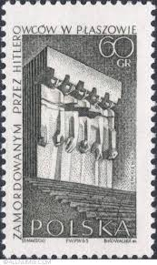 |
| Find Your Stamps Value | Value of poland 60gr 1964 stamps | 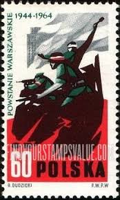 |
| allnumis.com | Maciej Pasztor Gallery of Stamps | 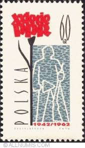 |
| Shutterstock | Poland Circa 1965 Stamp Printed Poland Stock Photo 41660137 | Shutterstock | 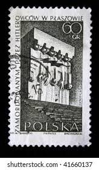 |
| eBay | Poland - 1968 Revolutionary Action Monument | eBay | 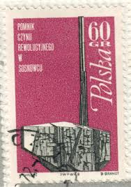 |
| Amazon.com | Poland 2159,2160,2161,2171Zf (Complete.Issue.) unmounted Mint/Never hinged ** MNH 1972 WAr, Zehden U.A. (Stamps for Collectors) Military/Knight : Toys & Games - Amazon.com | 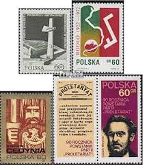 |
| BidCurios | Poland album pages, used/mint stamps lightly glued on paper, 12 pages lot, 7482 - BidCurios | 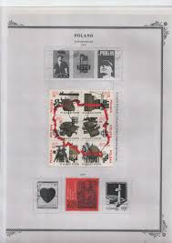 |
| eBay | 1911-1920 Year of Issue Polish Stamps for sale | eBay | 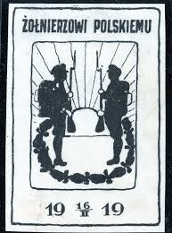 |
| HipStamp | Poland 1984 MNH Stamps Solidarity Post Solidarnosc Communist Party Elections | Europe - Poland, Back of Book (Other) - Revolutionary Government Stamp / HipStamp | 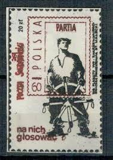 |
| Old-Stamps.com | 40 rocznica Powstania Warszawskiego / Polska 1984 | 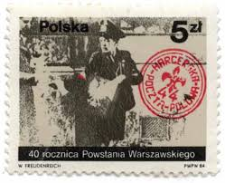 |
| eBay | Superb WWII Polish Stamps for sale | eBay | 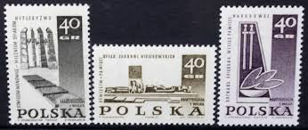 |
| Find Your Stamps Value | Memorial Types of 1967: Guerrilla Memorial, Kartuzy 40g Sepia stamp price, value | 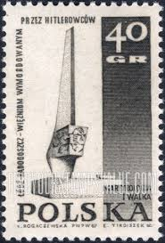 |
| Shutterstock | 18 Six Year Reconstruction Plan Royalty-Free Images, Stock Photos & Pictures | Shutterstock | 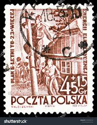 |
| biistamp.com | Polish Stamps for Sale - Specialized Price List | Bieniecki Polish Filatelia | 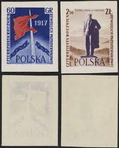 |
| Shutterstock | Poland Circa 1952 Stamp Printed Poland Stock Photo 131619959 | Shutterstock | 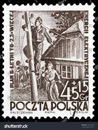 |
| Shutterstock | 13 Lukaszewski Royalty-Free Images, Stock Photos & Pictures | Shutterstock | 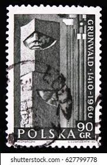 |
| Shutterstock | Warsaw Poland Stamp: Over 1,359 Royalty-Free Licensable Stock Photos | Shutterstock | 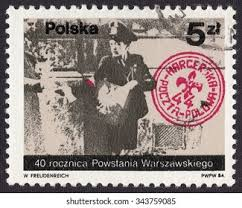 |
| HipStamp | POLOGNE / POLAND - 1952 Mi.775A 5gr green Gdansk shipyard p.12-1/2x12-3/4- CTO | Europe - Poland, Stamp / HipStamp | 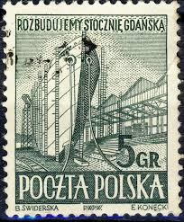 |
| Alamy | Gemini constellation vintage hi-res stock photography and images - Alamy | 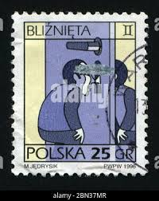 |
| Free | Albums de timbres en PDF Cet album a ét télécharge gratuitement sur http://tim.mond.free.fr/ Il est gratuit Si vous l'avez ac | 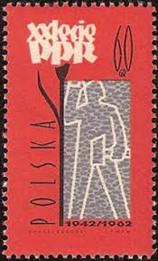 |
| eBay | Poland 1950 used Mi 665 “GROSZY” overprinted on Worker and Miner / 18 | eBay | 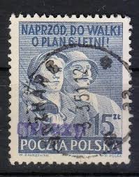 |
| bwdavis.us | WW Poland 1957 to date - Collectibles of Bwdavis | 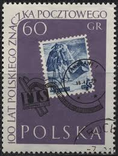 |
| Dreamstime.com | 300 Building Plan Printing Stock Photos - Free & Royalty-Free Stock Photos from Dreamstime | 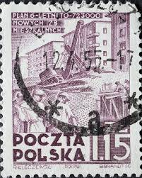 |
| found this in my stamp collection just on the day of the commemoration strangely enough 🌹 | 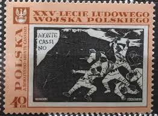 | |
| Dreamstime.com | 20th Anniversary of Warsaw Pact Editorial Stock Image - Image of 20th, life: 165170169 | 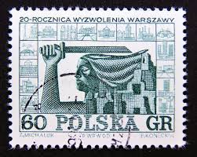 |
| Stamp Community Forum | Musicians And Composers On Stamps - Page 3 - Stamp Community Forum | 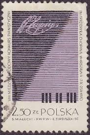 |
| WordPress.com | Poland Folk Motifs | Remembering Letters and Postcards | 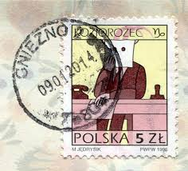 |
| eBay | Military, War Postal Card, Stationery Poland Stamps for sale | eBay | 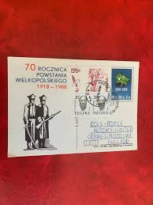 |
| Find Your Stamps Value | Value of polska 60 gr stamps | |
| Dreamstime.com | Postage Stamp Poland, 1951. Electric Wire Construction Editorial Stock Image - Image of pictogram, label: 225095504 | |
| https://twitter.com/CATontheARK/status/1446475042603376643?s=20&t=cXTv0MJwZijqb2iibxP9Qg | ||
| Cherrystone Auctions | Versailles Collection Part III; U.S. & Worldwide Stamps & Postal History - November 1-3, 2005 - Poczta Marszowa Block "D" | |
| Shutterstock | Poland Circa 1960 Cancelled Postage Stamp Stock Photo 2660436051 | Shutterstock | |
| eBay | Polska Poland 1968 Fi 1707 Mi 1854 MNH Pomnik Czynu Rewolucyjnego w Sosnowcu | eBay | |
| Blogger.com | Jim bao Today with ©opyright on all pictu®es and text: The Warsaw Ghetto Uprising - Postal stamps and FDC (First Day Cover). | |
| eBay | POLAND BLACK PRINT 1958 RARE !! MONUMENT WARSAW GHETTO 'm4169 | eBay | |
| lastdodo.com | Gdansk Shipyard 5 (1952) - Poland - LastDodo |  |
| Alamy | Poland postage stamp hi-res stock photography and images - Page 21 - Alamy | |
| eBay | Poland 461 1945 115th Anniversary Of The Insurrection Of 1830 MNH | eBay |